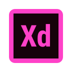
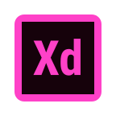

Contexte
Dans le cadre de ma première année de formation en B1 Cycle Web & Multimédia, j’ai effectué un stage de huit semaines, représentant une première immersion dans le monde professionnel.
J’ai eu l’opportunité d’intégrer l’association Bailanima, organisatrice du festival Cubasanga, un événement culturel et festif centré sur les danses et musiques caribéennes. Ce stage m’a permis de participer à la refonte complète du site internet du festival, tout en découvrant le fonctionnement d’une association culturelle et les coulisses de l’organisation d’un événement d’envergure.
J’ai été encadré par Delphine (suivi du projet) et Haithem (développeur). L’objectif principal était de moderniser le site du festival afin de mieux refléter l’univers festif et chaleureux de l’événement.


Missions
• Créer une identité visuelle numérique cohérente avec celle utilisée sur les réseaux
• Proposer une expérience utilisateur fluide, immersive et responsive
• Développer le site de façon à ce qu’il soit administrable facilement par l’équipe via une API personnalisée
• Adapter le site à différents supports (ordinateur, tablette, mobile)
• Respecter l’ambiance du festival tout en intégrant les contraintes de temps et de faisabilité
Outils et Applications Utilisés
Durant mon stage, j’ai utilisé divers outils professionnels pour concevoir, coder, organiser et collaborer efficacement sur le projet. De la création de maquettes jusqu’à la fin de mon stage, chaque application a joué un rôle spécifique dans l’avancement du travail.

 



Analyse Concurrentielle
Démarche
Étude des sites concurrents pour comprendre les codes graphiques et ergonomiques des événements similaires.
Utilité
"Elle a permis de définir des axes de différenciation et de poser des bases solides pour la direction artistique.


Résultats et livrables
Au terme de ces différentes étapes, plusieurs réalisations concrètes ont vu le jour. Cette galerie présente un aperçu des livrables produits, allant des maquettes jusqu’au site final développé.


Bilan personnel et professionnel
Ce stage m’a offert une première expérience professionnelle concrète, me plongeant dans un environnement réel de production au sein d’une structure associative dynamique. Il m’a permis de consolider mes compétences techniques en développement web, notamment en HTML, CSS et PHP, tout en mettant en pratique les notions de responsive design et d’accessibilité. J’ai également amélioré ma maîtrise des outils de maquettage, de versioning, et d’organisation de projet.
Sur le plan humain, j’ai gagné en autonomie et en rigueur. Travailler aux côtés de Haithem, développeur expérimenté, m’a permis d’appréhender l’importance de la lisibilité du code, de la structure des dossiers, et de la réutilisabilité des composants. Les échanges réguliers avec Delphine m’ont appris à mieux communiquer mes choix graphiques et à argumenter mes propositions avec clarté. Cette expérience m’a aussi confronté à des contraintes réelles de temps et de faisabilité, auxquelles j’ai dû m’adapter.
Je ressors de ce stage plus confiant dans ma capacité à m’adapter à un environnement professionnel et à répondre aux attentes d’un client ou d’une équipe. Cela a confirmé mon attrait pour les projets mêlant design et développement, et a affiné mon projet d’orientation vers le front-end et l’UX/UI design.

Conclusion
Cette immersion dans l’univers associatif m’a offert une opportunité précieuse d’allier apprentissage technique, créativité graphique et gestion de projet. La diversité des missions m’a permis de suivre toutes les étapes d’un projet digital, de l’analyse jusqu’à la mise en ligne.
Le site développé pour Cubasanga constitue aujourd’hui un support de communication moderne, immersif et cohérent avec l’image festive du festival. C’est une réalisation dont je suis fier et qui enrichit significativement mon portfolio.
Ce stage a confirmé mon envie de continuer à travailler dans le domaine du web, notamment dans des projets à dimension culturelle et artistique. Pour la suite, je souhaite approfondir mes compétences en JavaScript, frameworks front-end et design d’interfaces, afin de gagner en polyvalence et en efficacité.